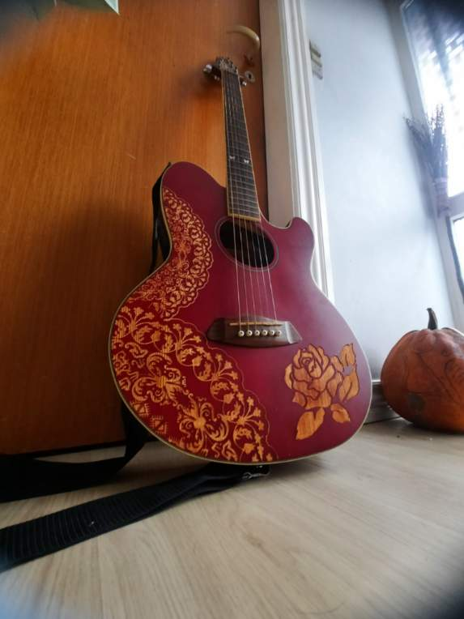

Kontakt MLI
For booking, samarbejde og pressehenvendelser — skriv til:
e.blomgren@outlook.dkJeg bestræber mig på at svare inden for 48 timer.
Book MLI eller Spørg om Samarbejde
Ønsker du at booke MLI til en koncert, visestue, festival eller privat arrangement?
Skriv direkte til hendes mail med dine ønsker og datoer.
✦
Musikalsk CV
Emelie Blomgren — MLI
2022 —
GINNUNGAGAP — Historisk musikensemble
Medstifter af trioen GINNUNGAGAP med Kai Stensgaard og Tine K. Skau.
Vikingemusik og norrøn klang. Optræder på vikingemarkeder, museer og festivaler.
Løbende
VISEKÆLLINGEN — Solo vise-projekt
Solo-optræden med nordiske viser, folkesange og middelaldersballader.
Guitar og sang.
Løbende
Den Danske Bellmanskvartetten
Ensemble der hylder Carl Michael Bellmans arv. Samarbejde med Tine Skau og
Kai Stensgaard.
Løbende
Visestuer & Workshops
Leder Visestuer på festivaler som Skjaldefestivalen. Undervisning i
folkemusik og fællessang. Skjaldeskole for børn.
Kompetencer
Instrumenter & Færdigheder
Sang (hovedinstrument), guitar, lyre, trommer. Skaldisk tradition,
historisk formidling, workshopleder. Synger på dansk, svensk, gammelsvensk og oldnordisk.
I Pressen
Udvalgte artikler og omtale af MLI / Emelie Blomgren

Presse
Svensk folkemusiker bringer vikingemusik til Danmark

Presse
Svensk folkemusiker bringer vikingemusik til Danmark

Presse
GINNUNGAGAP — Historisk musik med sjæl og energi

Presse
Skjaldefestivalen — Visestue med MLI
Har du skrevet om MLI? Send gerne et link til e.blomgren@outlook.dk